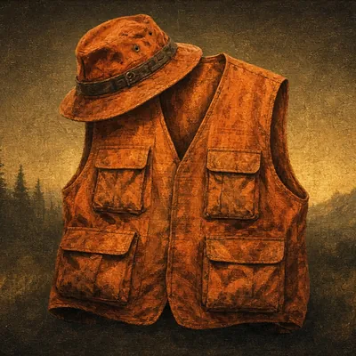
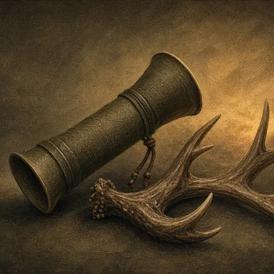

Gear list
Whitetail Stand Kit
Treestand and ground-blind deer hunting close to home.
Home / Gear lists / Whitetail Stand Kit
Disclosure: We may earn a commission from links on this site, at no extra cost to you. As an Amazon Associate I earn from qualifying purchases. Links open each store's own search. We never show prices, ratings or reviews, so check details on the retailer's site. Shop top-rated → opens the store's search sorted by customer rating. Details
Expedition readiness
⛺ Base Camp Set🗺️ Hunt Plan Drawn🎒 Kit Packed💰 Funded👥 Party Assembled🛂 Papers Confirmed
In the app, checking off this kit earns the 🎒 Kit Packed badge on your expedition.
🦌 The checklist
- Safety harness + lifelineStand · Wear a full-body harness and stay connected from the ground up.
- Pull-up ropeStand · Haul your bow or unloaded gun up after you're secured. Never climb with it.
- Seat cushionStand · Quiet comfort keeps you on stand through the late-morning movement.

Blaze orange (confirm local rules)Clothing · Requirements vary by state and season. Check with your state agency.- Scent-control layersClothing · Clean, stored layers you put on at the truck.

Grunt call / rattling antlersCalls · Useful around the rut, and best used sparingly.- Drag rope & glovesField · Makes getting a deer out far easier.
- Trail cam SD cards & batteriesField · Swap cards quickly and get out of the area.
- Wind checkerField · Check the wind before you pick a stand, and again once you're in it.
- License & tags (printed or in app)Essentials · Carry them the way your state requires. Some states need paper tags, others accept electronic ones. Check your state agency.
- Headlamp + spare batteriesEssentials · You'll walk in and out in the dark. A red mode keeps your night vision.
- Knife & sharpenerEssentials · One reliable fixed or replaceable-blade knife plus a compact sharpener.
- First-aid kitEssentials · Bleeding control, blister care and any personal meds.
- Phone + power bankEssentials · Your maps, GPS return and weather live on the phone. Keep it charged and dry.
- Water & snacksEssentials · More water than you think you need, and food that doesn't crinkle.
 BinocularsOptics · You'll see more game, and see it sooner, through glass than with your eyes alone.
BinocularsOptics · You'll see more game, and see it sooner, through glass than with your eyes alone.- RangefinderOptics · Know your distance before the moment comes. A laser rangefinder is the standard tool.
- Practice ranging at the distances you expectSharp Shooter · If you use the app's Sharp Shooter camera rangefinder, calibrate it on a known distance. Its readings are estimates, not a laser.
🎒
Kit PackedRead next: Playing the Wind for Whitetail: A Practical Field Guide. Shop departments: Tree Stands & Blinds · Scent Control · Electronics & Trail Cams.
Item images are illustrations, not the exact products sold.